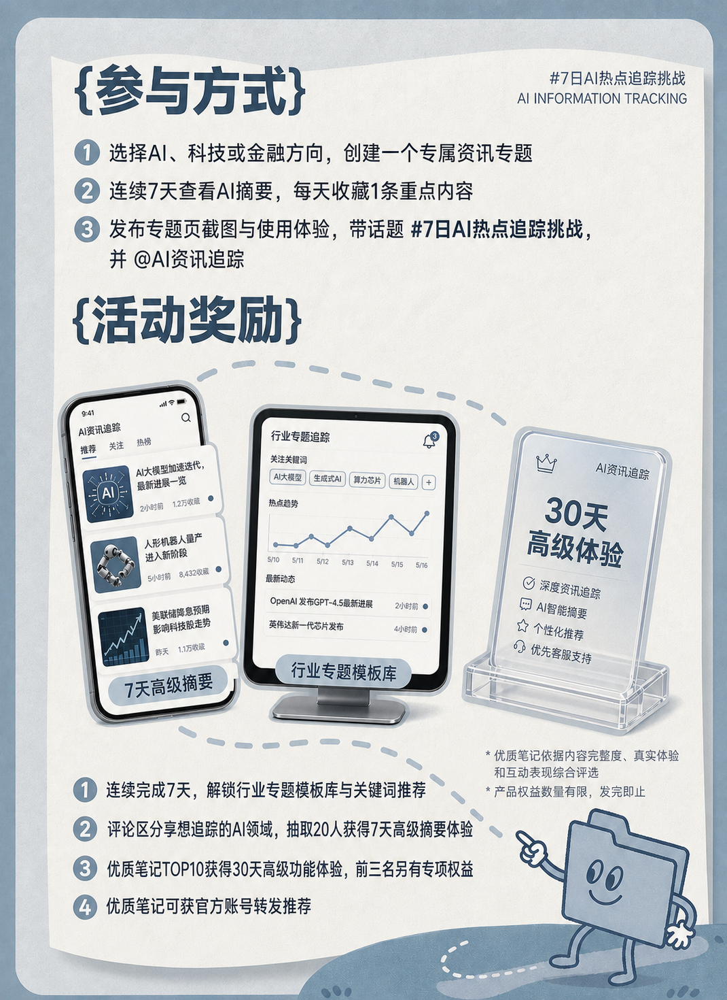
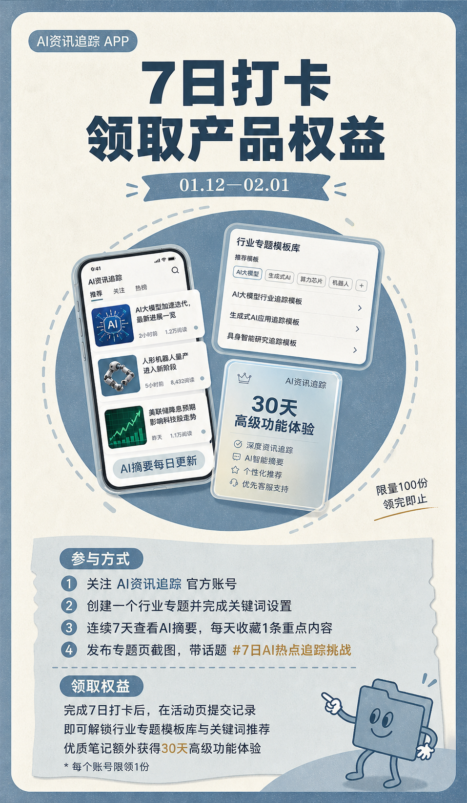
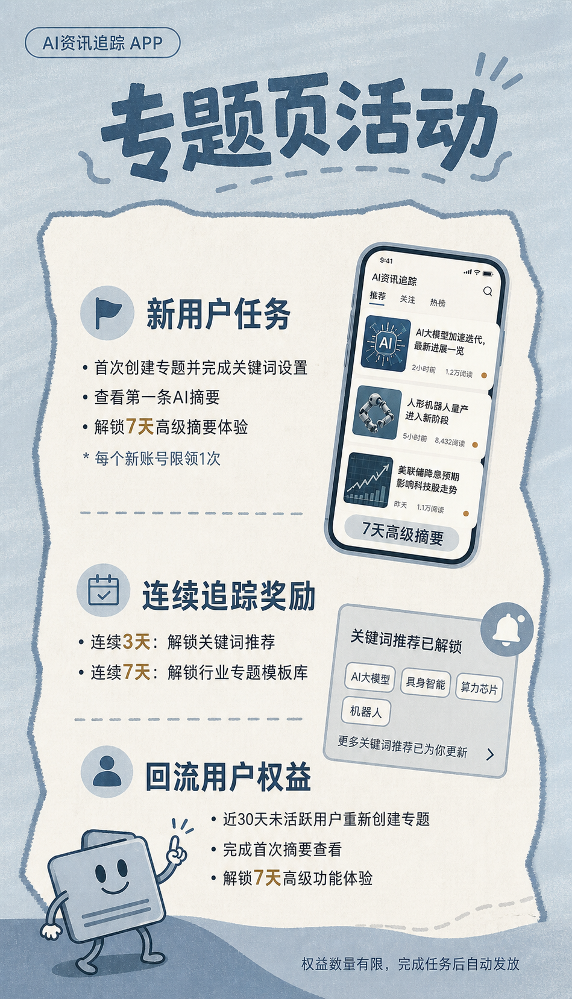
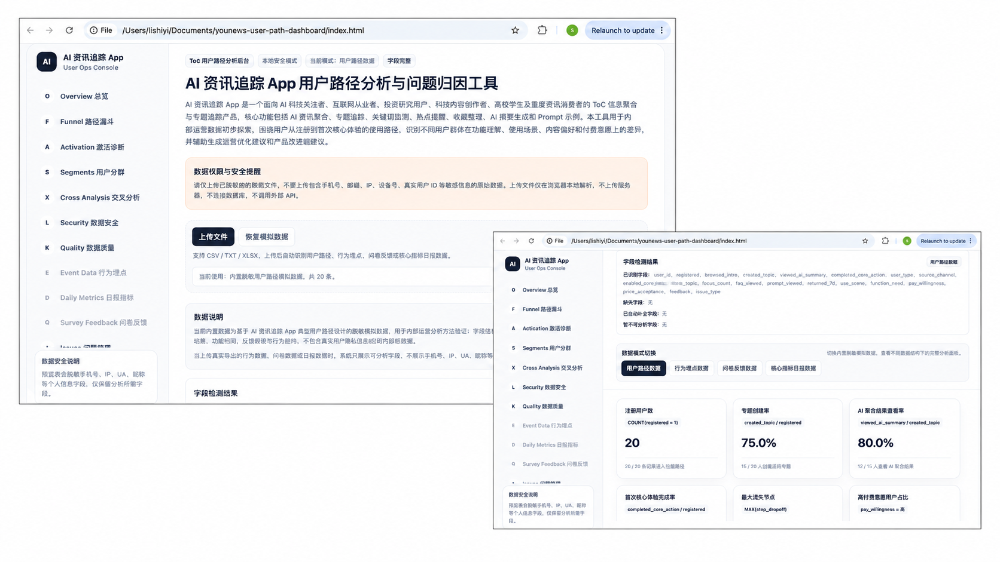

观猹
约100元完成产品上新展示，触达AI产品早期用户。
AI Product Growth · Multi-channel Activation
从多渠道冷启动、KOL/KOC小额试投到用户问卷和激活分析，用数据判断流量质量，并把运营资源集中到真正带来注册与首次核心体验的渠道。
十周内容与创作者累计曝光
专属链接与来源参数有效访问
十周可归因新增注册
科技博主发布周环比
首次专题创建率相对提升
Project brief
产品提供AI资讯聚合、专题创建、关键词监测、AI摘要和热点提醒。新品阶段的关键问题，是哪些渠道能够带来真正理解产品、愿意创建专题并持续回访的用户。
初期同步测试公众号、小红书、知乎、豆瓣、科技网站、AI产品社区、KOL/KOC与社群。每周突出一个新增变量，统一观察曝光、访问、注册、专题创建和回访，逐步确定渠道优先级。
最终将小红书确定为主要增长来源；科技小博主兼顾流量规模和激活质量；低成本KOC承担长尾铺量；公众号、知乎和科技网站分别负责教育、搜索与产品分发。
Growth model
十周漏斗由58万次内容触达进入15,800次有效访问，获得1,438名注册与630名首次专题创建用户；访问注册率为9.1%，整体专题创建率为43.8%。
社媒、KOL/KOC、科技网站与产品社区。
曝光 / 阅读通过专属链接或来源参数进入落地页。
CTR / UV完成账号注册，进入产品首次体验。
注册转化率从被动阅读转向主动配置信息需求。
专题创建率消费聚合结果，体验产品核心能力。
摘要查看率开启提醒并在七日内再次使用。
提醒 / 7日回访Data system
每条内容先建立Campaign ID，发布后按T+1、T+3、T+7和T+14记录传播、注册、激活和长尾数据；问卷补充“为什么转化或流失”。
曝光、互动、访问、注册、发布时间与来源参数。
创作者类型、粉丝区间、报价、内容表现与单位成本。
注册、专题创建、摘要查看、提醒开启与7日回访。
来源认知、使用场景、核心需求与首次体验阻碍。
专属链接、UTM或邀请码；用于计算渠道转化和成本。
来源域名、注册入口和发布时间匹配；用于趋势分析。
问卷中的AI推荐、朋友推荐和自然口碑；不与ROI数据重复相加。
Channel experiments
不同渠道和博主错开发布，减少动作重叠对归因的影响。前六周完成自然渠道、金融博主和KOC测试；科技博主在Week 7发布，当周新增注册由136人增至204人，后续三周继续复用高效内容场景。
Week 7发布周环比提升50%；后续三周平均新增181人，较发布前一周的136人高33%，验证内容场景可被持续复用。
Channel mix
官方内容与KOL/KOC合计贡献719名新增注册，占全部可归因注册的50%。科技网站与观猹带来规模较小但意图明确的产品发现流量。
扩大场景内容、功能教程和科技垂类合作。
承担低成本长尾、搜索和产品收录。
解释产品价值、发布FAQ并收集反馈。
发布不稳定或受众与产品场景匹配不足。
Distribution network
科技网站不承担短期爆量，而是增加产品被发现、搜索和收录的入口。DeepSeek等AI推荐仅记录为用户自报的自然发现信号，不作为可直接购买的渠道。
约100元完成产品上新展示，触达AI产品早期用户。
提交产品定位、功能和入口，获得分类收录与搜索长尾。
围绕AI资讯效率、工具体验和行业追踪发布回答。
承接行业解读、产品教程与新用户教育。
进行试用反馈、专题模板分发和功能答疑。
通过问卷记录用户最初认知来源，不与直接归因数据混算。
Acquisition campaign
拉新不只依赖博主曝光。围绕“不知道创建什么专题”“不会设置关键词”和“不理解产品差异”三类阻碍，把痛点内容、功能演示、模板激励和首次体验连接成活动路径，让用户从看到内容直接进入专题创建。
信息过载、热点分散、追踪低效。
展示专题、关键词、摘要与提醒。
用行业专题模板降低首次门槛。
选择场景并完成第一个专题。
快速看到AI摘要与追踪结果。
周报卡片带来推荐与再次访问。
用户选择AI、科技或金融方向的预设专题，在7天内完成创建、查看摘要、开启提醒和分享周报，集中验证从注册到首次价值的完整路径。
把用户最难完成的“选主题”和“写关键词”提前做成模板，通过功能教程和场景内容持续获客，注册后即可复制并开始追踪。
将用户一周追踪结果生成可分享的情报卡片，通过“分享给同事一起追踪”把产品价值转化为自然推荐，并承接已有用户回访。
Creative system
三张物料依次承接活动说明、参与转化与产品激活：先讲清参与条件和权益，再用7日打卡推动持续体验，最后以分层任务引导用户完成专题创建、连续追踪和回流。



Creator selection
候选账号集中在AI工具、科技效率、金融资讯和职场学习方向。重点比较最近10篇内容的阅读中位数、评论质量、内容契合度、商业占比与报价。
约1万粉 · ¥1,000
低粉真实体验 · ¥100
约1万粉 · ¥1,000
复用工具效率场景 · ¥150
复用行业追踪场景 · ¥200
内容选题场景 · ¥150
Creator performance
金融博主曝光不到科技博主的十分之一；KOC单位成本最低但规模分散；科技博主既带来更大访问量，也带来更高的专题创建率。
内容偏金融观点，产品使用场景连接不足。
完整演示专题创建、AI摘要与提醒，用户更容易理解产品价值。
单篇规模小，但低成本、真实体验和搜索长尾表现稳定。
User research
行为数据告诉团队用户停在哪里；问卷进一步回答用户为什么没有完成专题创建，以及不同人群真正需要什么功能。
向新增用户和未完成首次专题创建的用户发放120份问卷，回收92份，清洗重复与无效回答后保留88份。
其余8份反馈归入其他问题。专题模板和关键词示例因此被列为P1动作。
Activation analysis
科技博主发布周新增注册从136人增长至204人；完成首次专题创建的用户从56人增长至96人，专题创建率由41.2%提升至47.1%，相对提升约15%。科技博主专属链接直接归因88名注册，其中42人完成首次专题创建。
Decision system
渠道、创作者、问卷和产品行为不分开汇报，而是在同一张决策表中完成“信号—判断—动作—验证指标”的闭环。
| 数据信号 | 运营判断 | 下一步动作 | 验证指标 |
|---|---|---|---|
| 小红书贡献50%可归因注册 | 场景内容与产品目标用户匹配 | 增加教程、行业专题和KOC长尾 | 注册转化率 |
| 科技博主曝光约为金融博主10倍 | 科技受众与产品需求更一致 | 扩大科技垂类候选池，停止泛金融复投 | 单个激活成本 |
| 25/88用户不知道创建什么专题 | 首次体验缺少明确起点 | 增加行业专题模板和结果预览 | 专题创建率 |
| 18/88用户不会设置关键词 | 配置成本阻碍首次价值 | 发布关键词示例，反馈产品增加推荐 | 有效激活率 |
| 豆瓣帖子多次被删或限制 | 渠道稳定性不足 | 停止投入，将时间转向知乎与导航收录 | 运营人效 |
| 用户自报AI推荐来源 | 属于辅助发现而非直接归因 | 统一官网、知乎和导航中的产品说明 | 来源趋势 |
Operations SOP
分析页面不是独立项目，而是AI资讯产品增长过程中形成的个人工作SOP。它整合渠道、用户路径、行为埋点、问卷和日报，自动完成字段识别、漏斗计算、问题归因与数据预览。

Project outcome
从渠道数量竞争转向用户质量判断：先用低成本验证流量，再用注册、专题创建、问卷和单位成本决定是否继续投入。